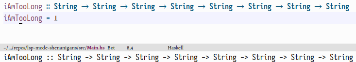
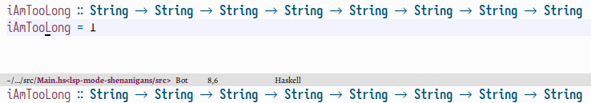
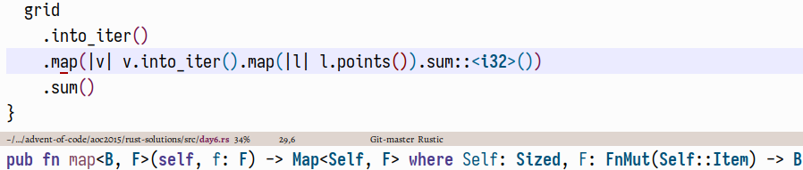
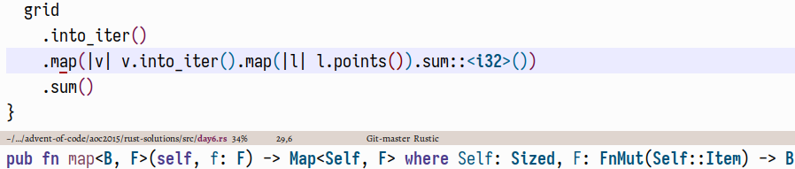
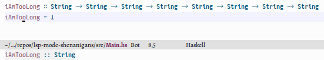
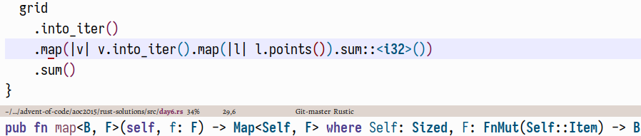

Posted on 2023-10-22 · last modified: 2023-10-27 · 5 min read · emacs, haskell, rust
Contents
By now,
lsp servers have become the norm for editor-agnostic language support.
As expected, Emacs features at least two packages that implement the protocol:
the built-in
By default, lsp-mode
The type signature is so long that the server breaks it into several lines.
Lsp-mode uses
It just takes the first line of the first markdown code block.
While this works for simple type signatures,
it obviously falls flat in more complicated scenarios.
However, this being a generic function,
there’s the possibility to overload it depending on the major mode.
We can now override the method with our own implementation:
This already looks fine, but something is still amiss.

There is no syntax highlighting!
Thankfully, this is not very difficult to fix;
the idea is to paste the string into a temporary buffer,
activate
Lsp-mode also provides a function for this,
This works quite nicely:

 Much like the user who opened the mentioned pull-request,
I really don’t care about this.
Instead, I’d much rather see

which looks much more useful to me.
Luckily, this is exactly the same situation as in the Haskell case,
which we already fixed.
Writing
works out of the box.
Nice.
Much like the user who opened the mentioned pull-request,
I really don’t care about this.
Instead, I’d much rather see

which looks much more useful to me.
Luckily, this is exactly the same situation as in the Haskell case,
which we already fixed.
Writing
works out of the box.
Nice.
 However, this ostensibly requires me to use the mouse,
Once we have the type signature at point,
all that’s left is to insert it into the buffer.
Bind that to a key and you’re good to go!
However, this ostensibly requires me to use the mouse,
Once we have the type signature at point,
all that’s left is to insert it into the buffer.
Bind that to a key and you’re good to go!

eglot,
and the third-party lsp-mode.
I will focus on the latter in this post.
Lsp clients have the option of showing useful things on hover.
In most languages, there is an obvious candidate for this:
the type signature of the thing at point.
Sadly—for some languages—the implementation of the feature is… not great.
Buggy even, one might say.I have reported this as a bug here,
but that issue seems to have stalled,
so here we are.
Taking this as an excuse to talk about Emacs’s infinite customisability,
there is of course a way to fix this within the bounds of our configuration.
Let’s do that!
The problem§
Take any Haskell function with a long enough type signature, like the following:iAmTooLong :: String -> String -> String -> String -> String -> String -> String -> String
iAmTooLong = undefined
And also eglot, judging from a cursory test.
will display the following type signature
in the echo-area
when hovering over the function name:

That’s… not correct.
Executing lsp-describe-thing-at-point immediately reveals the problem;
the request we get back looks like this:
``` haskell
iAmTooLong :: String
-> String
-> String
-> String
-> String
-> String
-> String
-> String
```
Defined at »PATH«
lsp-clients-extract-signature-on-hover to extract a signature on hover—by default, it looks like this:
(cl-defgeneric lsp-clients-extract-signature-on-hover (contents _server-id)
"Extract a representative line from CONTENTS, to show in the echo area."
(car (s-lines (s-trim (lsp--render-element contents)))))
Fixing Haskell type signatures§
The strategy seems pretty clear: extract the whole block instead of only the first line. This is swiftly done:Even more so because smart people have already written this for me;
see the docstring.
(defun slot/lsp-get-type-signature (lang str)
"Get LANGs type signature in STR.
Original implementation from https://github.com/emacs-lsp/lsp-mode/pull/1740."
(let* ((start (concat "```" lang))
(groups (--filter (s-equals? start (car it))
(-partition-by #'s-blank? (s-lines (s-trim str)))))
(name-at-point (symbol-name (symbol-at-point)))
(type-sig-group (car
(--filter (s-contains? name-at-point (cadr it))
groups))))
(->> (or type-sig-group (car groups))
(-drop 1) ; ``` LANG
(-drop-last 1) ; ```
(-map #'s-trim)
(s-join " "))))
(cl-defmethod lsp-clients-extract-signature-on-hover
(contents (_server-id (eql lsp-haskell))) ; Only for Haskell.
"Display the type signature of the function at point."
(slot/lsp-get-type-signature "haskell" (plist-get contents :value)))
haskell-mode,
and grab the propertised string from that.
The only thing to take care of is that we dont want to run lsp-mode and friends again in the temporary buffer.
(defun slot/syntax-highlight-string (str mode)
"Syntax highlight STR in MODE."
(with-temp-buffer
(insert str)
;; We definitely don't want to call certain modes, so delay the mode's
;; hooks until we have removed them.
(delay-mode-hooks (funcall mode))
(-map #'funcall
(--remove (-contains? '(lsp-mode lsp-deferred) it)
(-mapcat #'symbol-value delayed-mode-hooks)))
;; Now we can propertise the string.
(font-lock-ensure)
(buffer-string)))
lsp--render-string,
but that one does not try to load all of the “safe” hooks for the major mode.
However, I have some pretify-symbols-mode configuration for Haskell
which I would very much like to take effect.
All in all, we have
This code assumes that lsp-mode uses
plists instead of hash tables for deserialisation.
If you don’t have the
lsp-use-plists variable set—and have recompiled lsp-mode afterwards—then just replace (plist-get contents :value) with (gethash "value" contents).;; Fixes https://github.com/emacs-lsp/lsp-haskell/issues/151
(cl-defmethod lsp-clients-extract-signature-on-hover
(contents (_server-id (eql lsp-haskell)))
"Display the type signature of the function at point."
(slot/syntax-highlight-string
(slot/lsp-get-type-signature "haskell" (plist-get contents :value))
'haskell-mode))
Fixing Rust hovers§
One of the above code snippets already mentions lsp-mode#1740, which is not about Haskell, but Rust, a language that I also occasionally dabble in. The basic issue here goes like this: by default,lsp-mode shows the following hover information.
Much like the user who opened the mentioned pull-request,
I really don’t care about this.
Instead, I’d much rather see

which looks much more useful to me.
Luckily, this is exactly the same situation as in the Haskell case,
which we already fixed.
Writing
(cl-defmethod lsp-clients-extract-signature-on-hover
(contents (_server-id (eql rust-analyzer))) ; Only for Rust.
"Display the type signature of the function at point."
(slot/syntax-highlight-string
(slot/lsp-get-type-signature "rust" (plist-get contents :value))
'rustic-mode))
Bonus: adding type signatures§
Here’s another problem that we’ve solved en passant: lsp-mode has code-lens supportIncidentally, this is the only reason that I use lsp-mode over eglot.
There is a
stalled pr
from five years ago,
but that never led anywhere.
Someone should pick this back up, I suppose.
,
which enables one to add type signatures by clicking on the relevant button:
However, this ostensibly requires me to use the mouse,Lsp-mode also provides
and—more importantly—the above gif also shows that local functions do not have such a code lens attached to them.
I quite like type signatures for local definitions,
so that’s a bit of a shame.
Fixing this is not terribly difficult either;
the hardest thing is having to look through lsp-mode’s codebase so one actually knows which functions to call.
When defining the overrides for lsp-avy-lens,
so this is not really an actual problem.lsp-clients-extract-signature-on-hover, the lsp response was free,
whereas now we want to create a request for the thing at point.
(defun slot/lsp-get-type-signature-at-point (&optional lang)
"Get LANGs type signature at point.
LANG is not given, get it from `lsp--buffer-language'."
(interactive)
(-some->> (lsp--text-document-position-params)
(lsp--make-request "textDocument/hover")
lsp--send-request
lsp:hover-contents
(funcall (-flip #'plist-get) :value)
(slot/lsp-get-type-signature (or lang lsp--buffer-language))))
For when hovering inexplicably breaks again,
this also enables for a quick definition of “show the type signature of the thing at point”:
This can, again, be bound to a key for convenient access.
(defun slot/lsp-show-type-signature ()
"Show the type signature for the thing at
point. This is essentially what
`lsp-clients-extract-signature-on-hover'
does, just as an extra function."
(interactive)
(message
(slot/syntax-highlight-string
(slot/lsp-get-type-signature-at-point)
major-mode)))
(defun slot/lsp-haskell-type-signature ()
"Add a type signature for the thing at point.
This is very convenient, for example, when dealing with local
functions, since those—as opposed to top-level expressions—don't
have a code lens for \"add type signature here\" associated with
them."
(interactive)
(let* ((value (slot/lsp-get-type-signature-at-point "haskell")))
(slot/back-to-indentation)
(insert value)
(haskell-indentation-newline-and-indent)))

 Have a comment? Write me an
Have a comment? Write me an